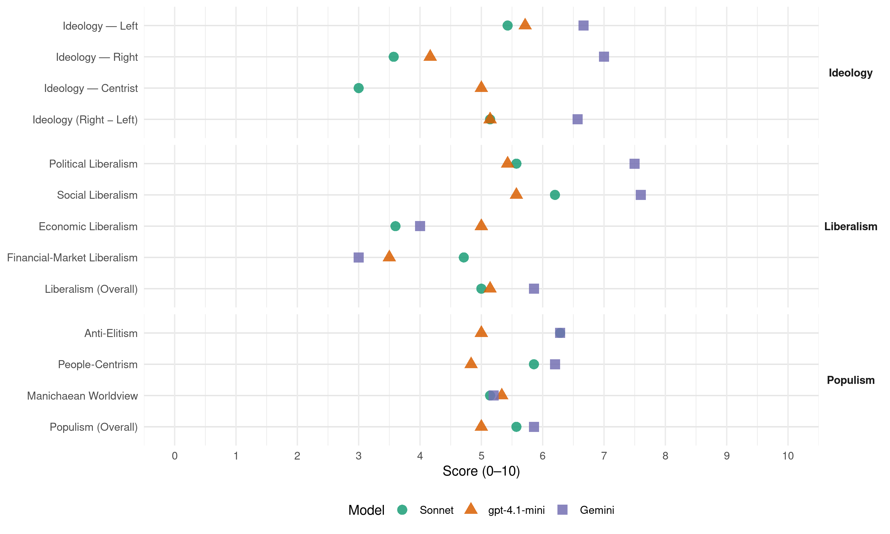

BQ (Canada, 2008)
manifesto_id 62901_200810
Get full text: This site shows derived annotations and short verbatim quotes only. The full manifesto text is © Manifesto Project / WZB — obtain it via manifesto-project.wzb.eu using the manifesto_id above.
Headline scores
| Dimension | Sonnet | gpt-4.1-mini | Gemini |
|---|---|---|---|
| Populism (Overall) | 5.6 | 5.0 | 5.9 |
| Anti-Elitism | 6.3 | 5.0 | 6.3 |
| People-Centrism | 5.9 | 4.8 | 6.2 |
| Manichaean Worldview | 5.1 | 5.3 | 5.2 |
| Ideology (Right − Left) | 5.1 | 5.1 | 6.6 |
| Liberalism (Overall) | 5.0 | 5.1 | 5.9 |
| Political Liberalism | 5.6 | 5.4 | 7.5 |
| Social Liberalism | 6.2 | 5.6 | 7.6 |
| Economic Liberalism | 3.6 | 5.0 | 4.0 |
| Financial-Market Liberalism | 4.7 | 3.5 | 3.0 |
Evidence per dimension
Economic Liberalism
Gemini · score 5.0 · mixed · chunk 1
“laisser-faire économique, approche répressive et rigide”
la plupart de leurs politiques sont calquées sur l’approche de la droite républicaine aux États-Unis : laisser-faire économique, approche répressive et rigide dans l’application de la justice
Gemini · score 4.0 · verified · chunk 2
“s’oppose à toute modification des quotas relatifs à la propriété étrangère”
Pour sa part, le Bloc Québécois s’oppose à toute modification des quotas relatifs à la propriété étrangère. À l’heure actuelle, la Loi sur les télécommunications
Gemini · score 4.0 · verified · chunk 3
“moderniser nos lois commerciales pour qu’elles protègent mieux nos entreprises”
Ces mesures incluent : moderniser nos lois commerciales pour qu’elles protègent mieux nos entreprises contre le dumping étranger; cesser de rejeter les
Gemini · score 3.0 · verified · chunk 4
“le laisser-faire, les slogans creux”
N’en déplaise au gouvernement conservateur, le laisser-faire, les slogans creux et la pensée magique ne sont pas des politiques.
Gemini · score 3.0 · verified · chunk 5
“opposé à une privatisation, même partielle”
Le Bloc Québécois est fermement opposé à une privatisation, même partielle, de Postes Canada. Cette société d’État
Gemini · score 6.0 · verified · chunk 7
“L’ouverture au commerce et la création de règles internationales pour contrer le protectionnisme”
créent plus de désespoir que le contraire. L’ouverture au commerce et la création de règles internationales pour contrer le protectionnisme et protéger les
gpt-4.1-mini · score 6.0 · verified · chunk 1
“le Québec doit pouvoir exercer pleinement les compétences qui sont censées être les siennes”
Premièrement, le Québec doit pouvoir exercer pleinement les compétences qui sont censées être les siennes en vertu de la constitution canadienne. Il doit pouvoir assumer ses propres responsabilités à même ses propres moyens, ce qui implique un important transfert de capacité fiscale.
gpt-4.1-mini · score 4.0 · verified · chunk 2
“le gouvernement fédéral multiplie les cadeaux à l’industrie pétrolière et gazière”
Qu’il soit conservateur ou libéral, le gouvernement fédéral multiplie les cadeaux à l’industrie pétrolière et gazière, lui permettant d’épargner des milliards de dollars.
gpt-4.1-mini · score 6.0 · verified · chunk 3
“mesures fiscales, mesures budgétaires, mesures commerciales”
…il faut beaucoup mieux soutenir l’industrie par des mesures fiscales, des mesures budgétaires, des mesures commerciales et des investissements structurants. …
gpt-4.1-mini · score 3.0 · verified · chunk 4
“le gouvernement fédéral offre aussi des incitatifs fiscaux à la R&D”
De plus, le gouvernement offre du soutien à l’investissement et des crédits d’impôts élevés qui font diminuer le coût de la recherche et font du Québec un lieu de prédilection pour les entreprises de haute technologie. Le gouvernement fédéral offre aussi des incitatifs fiscaux à la R&D.
gpt-4.1-mini · score 4.0 · verified · chunk 5
“le Bloc Québécois propose que le gouvernement prête sans intérêt un montant pouvant atteindre 10 000 dollars”
Le Bloc Québécois, conscient de cette problématique, envisage de mettre de l’avant un programme facilitant l’accès à une première propriété. Le Bloc Québécois propose que le gouvernement prête sans intérêt un montant pouvant atteindre 10 000 dollars pour faciliter l’accès à une première propriété.
gpt-4.1-mini · score 6.0 · verified · chunk 6
“le Bloc Québécois demande une augmentation substantielle des transferts au Québec”
Le Bloc Québécois va continuer d’exiger une hausse importante de l’effort financier du gouvernement fédéral consacré aux études postsecondaires par le biais de ses transferts au Québec et aux provinces.
gpt-4.1-mini · score 6.0 · verified · chunk 7
“L’ouverture au commerce et la création de règles internationales pour contrer le protectionnisme”
…L’ouverture au commerce et la création de règles internationales pour contrer le protectionnisme et protéger les investissements sont de bonnes choses auxquelles le Bloc Québécois adhère…
Sonnet · score 4.0 · verified · chunk 1
“les marchés financiers ontariens aux secteurs de pointe”
Une politique qui privilégie le pétrole albertain aux entreprises manufacturières québécoises, les marchés financiers ontariens aux secteurs de pointe du Québec nuit aux intérêts du Québec.
Sonnet · score 4.0 · verified · chunk 2
“déréglementation des télécommunications en 2005”
Alors que le gouvernement libéral se dirigeait vers une déréglementation des télécommunications en 2005, l’urgence de contrer cette orientation devient d’autant plus criante
Sonnet · score 4.0 · mixed · chunk 3
“laisser-faire, les slogans creux”
N’en déplaise au gouvernement conservateur, le laisser-faire, les slogans creux et la pensée magique ne sont pas des politiques.
Sonnet · score 3.0 · verified · chunk 4
“effets pervers de la déréglementation et de la libéralisation des marchés”
À l’idéologie du gouvernement conservateur en place, qui refuse de corriger les effets pervers de la déréglementation et de la libéralisation des marchés, nous opposons une approche plus respectueuse
Sonnet · score 3.0 · verified · chunk 5
“le libre marché, le désengagement gouvernemental”
Selon eux, le libre marché, le désengagement gouvernemental et les baisses d’impôt sauront régler tous les problèmes. Avec les conservateurs, l’idéologie et la partisanerie passent avant les personnes.
Sonnet · score 4.0 · verified · chunk 6
“les sommes versées au régime d’assurance-emploi ne fassent plus partie des comptes”
que les sommes versées au régime d’assurance-emploi ne fassent plus partie des comptes du Canada (fonds consolidés), mais soient dorénavant transférées dans un compte à part
Sonnet · score 6.0 · mixed · chunk 7
“L’ouverture au commerce et la création de règles internationales”
L’ouverture au commerce et la création de règles internationales pour contrer le protectionnisme et protéger les investissements sont de bonnes choses auxquelles le Bloc Québécois adhère.
Financial-Market Liberalism
Gemini · score 3.0 · verified · chunk 1
“création d’une commission pancanadienne des valeurs mobilières”
opposition à la création d’une commission pancanadienne des valeurs mobilières; transfert à Québec
Gemini · score 3.0 · verified · chunk 4
“financement des ventes, en particulier des ventes à l’exportation”
un engagement ferme et prévisible de financement des ventes, en particulier des ventes à l’exportation;
gpt-4.1-mini · score 4.0 · verified · chunk 1
“le gouvernement fédéral de créer un organisme commun de réglementation des valeurs mobilières”
Avec l’arrivée des conservateurs de Stephen Harper, les pressions pour évincer le Québec du monde de la finance ont monté d’un cran. Le ministre des Finances, l’Ontarien Jim Flaherty, a inscrit dans son budget 2006 la volonté du gouvernement fédéral de « travailler avec les provinces et les territoires en vue de mettre sur pied un organisme commun de réglementation des valeurs mobilières ».
gpt-4.1-mini · score 2.0 · verified · chunk 4
“le gouvernement fédéral compte un centre de recherche, l’Institut de recherche en aérospatiale du CNRC”
En plus du soutien direct, le gouvernement fédéral compte un centre de recherche, l’Institut de recherche en aérospatiale du CNRC. Celui-ci compte 250 chercheurs et des équipements de pointe comme des souffleries, des bancs d’essai, des aéronefs de recherche ou des chaînes de montage expérimentales.
gpt-4.1-mini · score 2.0 · verified · chunk 5
“le Bloc Québécois est fermement opposé à une privatisation, même partielle, de Postes Canada”
Le Bloc Québécois est fermement opposé à une privatisation, même partielle, de Postes Canada. Cette société d’État doit demeurer un organisme public afin de maintenir des services universels avec des tarifs uniformes sur l’ensemble du territoire. Le Bloc Québécois considère donc : qu’avant de réduire ou d’éliminer le « privilège exclusif » de Postes Canada, le gouvernement doit tenir un examen public et exhaustif de la question, y compris son impact sur l’obligation de fournir un service public, universel et abordable, à tous les Québécois et à tous les Canadiens.
gpt-4.1-mini · score 6.0 · verified · chunk 7
“Le Bloc Québécois presse le gouvernement fédéral de réviser ses positions dans les négociations commerciales”
…Le Bloc Québécois presse le gouvernement fédéral de réviser ses positions dans les négociations commerciales pour faire en sorte d’inclure dans les accords commerciaux des clauses prévoyant le respect de standards internationaux en termes de droit du travail, de respect des droits de la personne et de l’environnement…
Sonnet · score 5.0 · verified · chunk 1
“commission pancanadienne des valeurs mobilières”
opposition à la création d’une commission pancanadienne des valeurs mobilières; transfert à Québec de la formation de la main-d’œuvre
Sonnet · score 4.0 · verified · chunk 2
“propriété étrangère dans le secteur des télécommunications”
s’était dit ouvert à un relâchement de la réglementation actuelle sur la propriété étrangère dans le secteur des télécommunications, dans la mesure où cela permettait au Canada d’être plus concurrentiel.
Sonnet · score 6.0 · verified · chunk 3
“bourse du carbone à Montréal”
sur la création d’une bourse du carbone à Montréal et sur des mesures fédérales que le gouvernement peut entreprendre dans ses propres champs de compétence
Sonnet · score 4.0 · verified · chunk 4
“facilités d’accès au crédit”
il faut redonner à l’industrie sa capacité concurrentielle par une fiscalité adaptée, des mesures pour stimuler les ventes, des facilités d’accès au crédit et un soutien à l’investissement
Sonnet · score 4.0 · verified · chunk 5
“accès à des sources de financement adaptées”
Il vise à favoriser la plus grande autonomie financière possible pour ces entreprises, en leur donnant accès à des sources de financement adaptées à leur réalité.
Sonnet · score 5.0 · verified · chunk 6
“protection de certains REER et FEER”
le gouvernement conservateur n’en a pas moins persisté à ignorer une lacune majeure soulevée par le gouvernement du Québec quant à la protection de certains REER et FEER.
Sonnet · score 5.0 · verified · chunk 7
“offensive rigoureuse et sans précédent pour mettre fin à l’évitement fiscal”
le Bloc Québécois mettra de l’avant une offensive rigoureuse et sans précédent pour mettre fin à l’évitement fiscal par l’entremise des paradis fiscaux.
Political Liberalism
Gemini · score 8.0 · verified · chunk 1
“La démocratie parlementaire québécoise remonte à 1792”
La démocratie parlementaire québécoise remonte à 1792 et au Parlement du Bas Canada
Gemini · score 8.0 · verified · chunk 2
“fondement de la démocratie et de la société de droit”
s’en prend systématiquement à tous les contrepouvoirs qui constituent pourtant le fondement de la démocratie et de la société de droit.
Gemini · score 5.0 · verified · chunk 3
“le plein respect des compétences du Québec”
l’application du principe du pollueur-payeur; l’équité en matière d’efforts demandés et le plein respect des compétences du Québec. Sur cette base, le Bloc Québécois propose un
Gemini · score 8.0 · verified · chunk 5
“la participation citoyenne et démocratique”
l’épanouissement et le rayonnement de la langue et de la culture québécoise; la participation citoyenne et démocratique; le droit de recevoir
Gemini · score 8.0 · verified · chunk 6
“respecter un juste équilibre entre le droit à la sécurité et les autres droits fondamentaux”
toute mesure de lutte contre le terrorisme devait respecter un juste équilibre entre le droit à la sécurité et les autres droits fondamentaux.
Gemini · score 8.0 · verified · chunk 7
“respecter un juste équilibre entre le droit à la sécurité et les autres droits fondamentaux”
lutte contre le terrorisme devait respecter un juste équilibre entre le droit à la sécurité et les autres droits fondamentaux. Lors de l’étude
gpt-4.1-mini · score 7.0 · verified · chunk 1
“La démocratie est une valeur fondamentale de l’action politique du Bloc Québécois”
La démocratie est une valeur fondamentale de l’action politique du Bloc Québécois. L’assemblée nationale du Québec L’Assemblée nationale est le lieu privilégié de la démocratie québécoise. C’est le seul Parlement maîtrisé par le peuple québécois et autorisé à parler en son nom.
gpt-4.1-mini · score 3.0 · verified · chunk 2
“le gouvernement ne fait pas les lois et ne peut, de son propre chef, effectuer des dépenses ou lever l’impôt”
Dans notre société, le gouvernement ne fait pas les lois et ne peut, de son propre chef, effectuer des dépenses ou lever l’impôt. C’est la responsabilité du Parlement. Il ne peut non plus interpréter lui-même les lois. C’est la responsabilité des tribunaux.
gpt-4.1-mini · score 7.0 · verified · chunk 3
“le respect des engagements internationaux”
…le Bloc Québécois propose un plan basé sur trois principes incontournables, soit : le respect des engagements internationaux; l’application du principe du pollueur-payeur; l’équité en matière d’efforts demandés et le plein respect des compétences du Québec. …
gpt-4.1-mini · score 3.0 · verified · chunk 4
“le gouvernement fédéral doit adopter une clause territoriale qui le forcerait à tenir compte de l’impact”
Le Bloc Québécois demande au gouvernement fédéral d’adopter une clause territoriale qui le forcerait à tenir compte de l’impact de l’ensemble de ses décisions sur les régions rurales.
gpt-4.1-mini · score 4.0 · verified · chunk 5
“le gouvernement fédéral ne cesse de se mettre le nez là où cela ne le regarde pas, principalement en raison de son pouvoir de dépenser”
Les politiques sociales sont clairement la responsabilité du Québec et des provinces, mais le gouvernement fédéral ne cesse de se mettre le nez là où cela ne le regarde pas, principalement en raison de son pouvoir de dépenser. C’est pourquoi le Bloc Québécois joue, à Ottawa, le rôle essentiel qui consiste à veiller à ce que ce pouvoir ne vienne pas entraver la capacité du Québec de faire ses propres choix sur les plans social et économique et de gérer lui-même son développement.
gpt-4.1-mini · score 7.0 · verified · chunk 6
“le Bloc Québécois dénonce vigoureusement la démarche du gouvernement visant à rendre l’affiliation politique des candidats plus importante”
Le Bloc Québécois dénonce vigoureusement la démarche du gouvernement visant à rendre l’affiliation politique des candidats plus importante que leurs qualifications.
gpt-4.1-mini · score 7.0 · verified · chunk 7
“la Charte de l’ONU est le principal fondement du droit international”
…La Charte de l’ONU est le principal fondement du droit international qui régit les relations entre les pays. Cette action se fonde sur un certain nombre de principes fondamentaux, dont celui de l’égalité souveraine de tous les États membres de l’ONU…
Sonnet · score 6.0 · verified · chunk 1
“La démocratie est une valeur fondamentale”
La démocratie est une valeur fondamentale de l’action politique du Bloc Québécois. L’assemblée nationale du Québec
Sonnet · score 4.0 · verified · chunk 2
“fondement de la démocratie et de la société de droit”
s’en prend systématiquement à tous les contrepouvoirs qui constituent pourtant le fondement de la démocratie et de la société de droit.
Sonnet · score 5.0 · verified · chunk 3
“compétences du Québec”
l’équité en matière d’efforts demandés et le plein respect des compétences du Québec. Sur cette base, le Bloc Québécois propose un plan
Sonnet · score 5.0 · verified · chunk 4
“non seulement le gouvernement n’a pas été transparent”
non seulement le gouvernement n’a pas été transparent dans sa façon de mener à terme son projet de déréglementation, mais qui plus est, il a mis la santé de la population en danger
Sonnet · score 6.0 · verified · chunk 5
“la participation citoyenne et démocratique”
les droits de la personne et le droit à la sécurité; le droit de vivre et de travailler en français partout au Québec; la participation citoyenne et démocratique
Sonnet · score 6.0 · verified · chunk 6
“l’indépendance, à l’impartialité et à l’objectivité des juges”
Les conservateurs s’attaquent ainsi ouvertement à la crédibilité du processus judiciaire, à l’indépendance, à l’impartialité et à l’objectivité des juges, ainsi qu’à la séparation des pouvoirs entre les trois branches du gouvernement.
Sonnet · score 7.0 · verified · chunk 7
“les fondements de notre société et de notre État de droit”
la chasse aux terroristes peut se faire sans que les fondements de notre société et de notre État de droit soient remis en cause.
Liberalism (Overall)
Gemini · score 6.0 · verified · chunk 1
“La démocratie parlementaire québécoise remonte à 1792”
La démocratie parlementaire québécoise remonte à 1792 et au Parlement du Bas Canada
Gemini · score 6.0 · verified · chunk 2
“fondement de la démocratie et de la société de droit”
s’en prend systématiquement à tous les contrepouvoirs qui constituent pourtant le fondement de la démocratie et de la société de droit.
Gemini · score 5.0 · verified · chunk 3
“le plein respect des compétences du Québec”
l’application du principe du pollueur-payeur; l’équité en matière d’efforts demandés et le plein respect des compétences du Québec. Sur cette base, le Bloc Québécois propose un
Gemini · score 3.0 · verified · chunk 4
“le laisser-faire, les slogans creux”
N’en déplaise au gouvernement conservateur, le laisser-faire, les slogans creux et la pensée magique ne sont pas des politiques.
Gemini · score 6.0 · verified · chunk 5
“l’égalité et la justice entre les hommes et les femmes”
l’enrayement maximum de la pauvreté, de l’exclusion et de la violence; l’égalité et la justice entre les hommes et les femmes, ainsi qu’entre
Gemini · score 8.0 · verified · chunk 6
“respecter un juste équilibre entre le droit à la sécurité et les autres droits fondamentaux”
toute mesure de lutte contre le terrorisme devait respecter un juste équilibre entre le droit à la sécurité et les autres droits fondamentaux.
Gemini · score 7.0 · verified · chunk 7
“respecter un juste équilibre entre le droit à la sécurité et les autres droits fondamentaux”
lutte contre le terrorisme devait respecter un juste équilibre entre le droit à la sécurité et les autres droits fondamentaux. Lors de l’étude
gpt-4.1-mini · score 6.0 · verified · chunk 1
“La démocratie est une valeur fondamentale de l’action politique du Bloc Québécois”
La démocratie est une valeur fondamentale de l’action politique du Bloc Québécois. L’assemblée nationale du Québec L’Assemblée nationale est le lieu privilégié de la démocratie québécoise. C’est le seul Parlement maîtrisé par le peuple québécois et autorisé à parler en son nom.
gpt-4.1-mini · score 4.0 · verified · chunk 2
“le gouvernement ne fait pas les lois et ne peut, de son propre chef, effectuer des dépenses ou lever l’impôt”
Dans notre société, le gouvernement ne fait pas les lois et ne peut, de son propre chef, effectuer des dépenses ou lever l’impôt. C’est la responsabilité du Parlement. Il ne peut non plus interpréter lui-même les lois. C’est la responsabilité des tribunaux.
gpt-4.1-mini · score 7.0 · verified · chunk 3
“le respect des engagements internationaux”
…le Bloc Québécois propose un plan basé sur trois principes incontournables, soit : le respect des engagements internationaux; l’application du principe du pollueur-payeur; l’équité en matière d’efforts demandés et le plein respect des compétences du Québec. …
gpt-4.1-mini · score 3.0 · verified · chunk 4
“le gouvernement fédéral offre aussi des incitatifs fiscaux à la R&D”
De plus, le gouvernement offre du soutien à l’investissement et des crédits d’impôts élevés qui font diminuer le coût de la recherche et font du Québec un lieu de prédilection pour les entreprises de haute technologie. Le gouvernement fédéral offre aussi des incitatifs fiscaux à la R&D.
gpt-4.1-mini · score 3.0 · verified · chunk 5
“le Bloc Québécois est fermement opposé à une privatisation, même partielle, de Postes Canada”
Le Bloc Québécois est fermement opposé à une privatisation, même partielle, de Postes Canada. Cette société d’État doit demeurer un organisme public afin de maintenir des services universels avec des tarifs uniformes sur l’ensemble du territoire. Le Bloc Québécois considère donc : qu’avant de réduire ou d’éliminer le « privilège exclusif » de Postes Canada, le gouvernement doit tenir un examen public et exhaustif de la question, y compris son impact sur l’obligation de fournir un service public, universel et abordable, à tous les Québécois et à tous les Canadiens.
gpt-4.1-mini · score 7.0 · verified · chunk 6
“le Bloc Québécois dénonce vigoureusement la démarche du gouvernement visant à rendre l’affiliation politique des candidats plus importante”
Le Bloc Québécois dénonce vigoureusement la démarche du gouvernement visant à rendre l’affiliation politique des candidats plus importante que leurs qualifications.
gpt-4.1-mini · score 6.0 · verified · chunk 7
“La Charte de l’ONU est le principal fondement du droit international”
…La Charte de l’ONU est le principal fondement du droit international qui régit les relations entre les pays. Cette action se fonde sur un certain nombre de principes fondamentaux, dont celui de l’égalité souveraine de tous les États membres de l’ONU…
Sonnet · score 5.0 · verified · chunk 1
“transparence à Ottawa pour que la population”
qu’il y ait suffisamment de transparence à Ottawa pour que la population et ses représentants aient accès à l’information
Sonnet · score 4.0 · verified · chunk 2
“contrepouvoirs qui constituent pourtant le fondement”
s’en prend systématiquement à tous les contrepouvoirs qui constituent pourtant le fondement de la démocratie et de la société de droit.
Sonnet · score 5.0 · mixed · chunk 3
“marché de permis échangeables”
le Bloc Québécois propose d’intégrer à une telle approche territoriale un marché de permis échangeables, géré au moyen d’une bourse du carbone
Sonnet · score 4.0 · verified · chunk 4
“effets pervers de la déréglementation et de la libéralisation des marchés”
À l’idéologie du gouvernement conservateur en place, qui refuse de corriger les effets pervers de la déréglementation et de la libéralisation des marchés
Sonnet · score 5.0 · verified · chunk 5
“droits de la personne et le droit à la sécurité”
les droits de la personne et le droit à la sécurité; le droit de vivre et de travailler en français partout au Québec; la participation citoyenne et démocratique
Sonnet · score 6.0 · verified · chunk 6
“juste équilibre entre le droit à la sécurité et les autres droits fondamentaux”
toute mesure de lutte contre le terrorisme devait respecter un juste équilibre entre le droit à la sécurité et les autres droits fondamentaux.
Sonnet · score 6.0 · verified · chunk 7
“les fondements de notre société et de notre État de droit”
la chasse aux terroristes peut se faire sans que les fondements de notre société et de notre État de droit soient remis en cause.
Anti-Elitism
Gemini · score 6.0 · verified · chunk 1
“les députés conservateurs du Québec, ne cessent de le répéter”
Ses perroquets chez nous, les députés conservateurs du Québec, ne cessent de le répéter depuis.
Gemini · score 8.0 · verified · chunk 2
“mettre fin à la culture du secret”
Ottawa pour que la population et ses représentants aient accès à l’information. Il faut mettre fin à la culture du secret qui règne au gouvernement fédéral; que les membres du gouvernement cessent d’abuser de leurs pouvoirs
Gemini · score 6.0 · verified · chunk 3
“les multiples cadeaux aux riches pétrolières consentis tant par les libéraux que les conservateurs”
représentera un millard d’économie d’impôt. Bref, les multiples cadeaux aux riches pétrolières consentis tant par les libéraux que les conservateurs leur permettront d’économiser plus de 2,7 milliards
Gemini · score 6.0 · verified · chunk 4
“désintérêt des politiciens des partis fédéralistes”
Vis-à-vis du désintérêt des politiciens des partis fédéralistes, le Bloc Québécois a même présenté
Gemini · score 7.0 · verified · chunk 5
“les conservateurs ont une lecture idéologique”
La plupart du temps, les conservateurs ont une lecture idéologique de la réalité. Selon eux, le libre marché
Gemini · score 7.0 · verified · chunk 6
“libéraux et conservateurs ont encore une fois démontré qu’ils ne se soucient pas”
Le 5 octobre 2005, libéraux et conservateurs ont encore une fois démontré qu’ils ne se soucient pas des conditions de travail des travailleuses
Gemini · score 4.0 · verified · chunk 7
“les conservateurs délaissent le rôle diplomatique traditionnel”
force est de constater que depuis 2006, les conservateurs délaissent le rôle diplomatique traditionnel du Canada pour s’investir
gpt-4.1-mini · score 8.0 · verified · chunk 1
“les députés fédéralistes du Québec s’écraser et se taire”
Malheureusement, une fois élus, les conservateurs ont modifié leur discours. Ils sont bien prêts à transférer de l’argent, mais ils veulent conserver le pouvoir de l’argent, donc la capacité, pour le gouvernement central, d’imposer ses priorités. Comme ses prédécesseurs à Ottawa, et peut-être même davantage, Stephen Harper veut tout maîtriser, y compris les priorités des Québécois. Et le plus triste, c’est de voir les députés fédéralistes du Québec s’écraser et se taire.
gpt-4.1-mini · score 3.0 · verified · chunk 2
“le premier ministre Harper considère l’État comme son domaine personnel”
Malheureusement, le premier ministre Harper considère l’État comme son domaine personnel. Il tient à tout maîtriser et s’en prend systématiquement à tous les contrepouvoirs qui constituent pourtant le fondement de la démocratie et de la société de droit.
gpt-4.1-mini · score 7.0 · verified · chunk 3
“les multiples cadeaux aux riches pétrolières”
…cela représentera un millard d’économie d’impôt. Bref, les multiples cadeaux aux riches pétrolières consentis tant par les libéraux que les conservateurs leur permettront d’économiser plus de 2,7 milliards de dollars en 2008-2009. C’est indécent ! Cette complaisance à l’endroit des pétrolières a même été critiquée par l’OCDE. …
gpt-4.1-mini · score 3.0 · verified · chunk 4
“le gouvernement conservateur semble décidé à sortir le Canada du jeu”
Malheureusement, sous les conservateurs, le gouvernement fédéral semble décidé à sortir le Canada du jeu et son action est proprement catastrophique. Non seulement il n’a aucune politique de l’aéronautique, mais toutes ses actions contribuent à affaiblir ce pilier de notre économie, soit par incompétence, soit par aveuglement, ou les deux.
gpt-4.1-mini · score 6.0 · verified · chunk 5
“l’intransigeance du ministre Blackburn démontre une nouvelle fois l’incohérence des conservateurs”
Cette mesure a été vivement condamnée par le gouvernement du Québec, les maires de plusieurs municipalités (Québec, Rimouski et Montréal notamment), plusieurs commissions régionales des élus et le monde économique québécois. Elle affecte également des acteurs du développement social et culturel, par exemple Le Chantier de l’économie sociale. Il s’agit donc d’une mesure inappropriée et fortement préjudiciable au tissu économique régional québécois. Ceci pourrait avoir comme conséquence la suppression d’un certain nombre d’emplois en milieu local. De plus, l’intransigeance du ministre Blackburn démontre une nouvelle fois l’incohérence des conservateurs en matière de développement régional au Québec, puisqu’ils font fi de la demande de nombreux acteurs économiques québécois, mais également du gouvernement du Québec et du Parti québécois de revenir sur cette décision.
gpt-4.1-mini · score 5.0 · mixed · chunk 6
“le gouvernement fédéral n’assume pas ses responsabilités”
le gouvernement fédéral n’assume pas ses responsabilités de fiduciaire et, par conséquent, des communautés autochtones vivent une situation que l’on retrouve dans de nombreux pays en développement.
gpt-4.1-mini · score 3.0 · verified · chunk 7
“le gouvernement conservateur s’est lancé dans une série de dépenses exorbitantes”
…le gouvernement conservateur s’est lancé dans une série de dépenses exorbitantes sans tenir un vaste débat sur les orientations à donner au mandat des Forces armées, à l’élaboration de leurs composantes…
Sonnet · score 7.0 · verified · chunk 1
“les libéraux et les conservateurs se battent pour prendre le pouvoir”
pendant que les libéraux et les conservateurs se battent pour prendre le pouvoir à Ottawa, nous, on se bat pour le Québec
Sonnet · score 7.0 · verified · chunk 2
“le premier ministre Harper considère l’État comme son domaine personnel”
Malheureusement, le premier ministre Harper considère l’État comme son domaine personnel. Il tient à tout maîtriser et s’en prend systématiquement à tous les contrepouvoirs
Sonnet · score 7.0 · verified · chunk 3
“multiples cadeaux aux riches pétrolières”
Bref, les multiples cadeaux aux riches pétrolières consentis tant par les libéraux que les conservateurs leur permettront d’économiser plus de 2,7 milliards
Sonnet · score 6.0 · verified · chunk 4
“le laisser-faire, les slogans creux et la pensée magique”
N’en déplaise au gouvernement conservateur, le laisser-faire, les slogans creux et la pensée magique ne sont pas des politiques.
Sonnet · score 7.0 · verified · chunk 5
“l’intransigeance du ministre Blackburn démontre une nouvelle fois l’incohérence des conservateurs”
Cette mesure a été vivement condamnée… l’intransigeance du ministre Blackburn démontre une nouvelle fois l’incohérence des conservateurs en matière de développement régional au Québec
Sonnet · score 6.0 · verified · chunk 6
“libéraux et conservateurs ont encore une fois démontré qu’ils ne se soucient pas des conditions de travail”
Le 5 octobre 2005, libéraux et conservateurs ont encore une fois démontré qu’ils ne se soucient pas des conditions de travail des travailleuses et des travailleurs en rejetant le projet de loi du Bloc Québécois.
Sonnet · score 4.0 · verified · chunk 7
“les libéraux que les conservateurs ont failli volontairement”
Force est de constater que tant les libéraux que les conservateurs ont failli volontairement à la tâche en matière de prévision de surplus.
Ideology — Centrist
gpt-4.1-mini · score 5.0 · verified · chunk 1
“un parti pancanadien défend les intérêts du Canada”
Il est impossible de tenir cette position dans un parti pancanadien. Par essence, un tel parti défend les intérêts du Canada. Les députés québécois d’un parti canadien, enfermés dans la ligne de parti pancanadienne, sont condamnés à défendre le Canada, ses intérêts, ses valeurs et son identité.
gpt-4.1-mini · score 5.0 · verified · chunk 2
“le Bloc Québécois est le parti de la vigilance”
À Ottawa, le Bloc Québécois est le parti de la vigilance. Il s’engage à garder le gouvernement fédéral sous surveillance, peu importe le parti au pouvoir.
gpt-4.1-mini · score 4.0 · verified · chunk 4
“le Bloc Québécois demande au gouvernement de mettre sur pied une politique aéronautique”
Depuis plusieurs années, le Bloc Québécois demande au gouvernement de mettre sur pied une politique aéronautique qui assurerait aux entreprises un soutien fiable et prévisible, leur permettant ainsi de planifier à l’avance leurs projets de développement.
gpt-4.1-mini · score 5.0 · verified · chunk 5
“le Bloc Québécois demande au gouvernement fédéral de : respecter les compétences du gouvernement du Québec”
Le Bloc Québécois demande à Ottawa de respecter les choix québécois Parce qu’il défend la position traditionnelle du Québec en matière de développement régional, le Bloc Québécois demande au gouvernement fédéral de : respecter les compétences du gouvernement du Québec en matière de développement régional; respecter et favoriser la mise en œuvre des objectifs du Québec en matière de développement régional, notamment en tenant compte des politiques régionales établies par le gouvernement du Québec en 2001, dont la stratégie de développement pour les régions ressources ainsi que la politique nationale de la ruralité pour soutenir le développement des communautés rurales québécoises; conclure avec le gouvernement du Québec des ententes prévoyant le transfert au Québec des fonds fédéraux alloués aux programmes de développement régional.
gpt-4.1-mini · score 5.0 · verified · chunk 6
“la différence québécoise doit être représentée, entendue et prise en compte à Ottawa”
Tant que les lois fédérales s’appliquent sur le territoire québécois, le gouvernement fédéral ne peut pas faire fi des valeurs et des opinions du Québec. La différence québécoise doit être représentée, entendue et prise en compte à Ottawa.
gpt-4.1-mini · score 6.0 · verified · chunk 7
“le Bloc Québécois considère que les interventions militaires devraient être uniquement entreprises avec l’aval de l’ONU”
…Le Bloc Québécois considère que les interventions militaires devraient être uniquement entreprises avec l’aval de l’ONU — organisation chargée de faire en sorte que d’autres solutions puissent être appliquées en lieu et place de la guerre…
Sonnet · score 3.0 · verified · chunk 1
“libre des compromissions avec la gauche centralisatrice”
libre des compromissions avec la gauche centralisatrice ou la droite doctrinaire du Canada, libre de représenter et de défendre le Québec
Sonnet · score 3.0 · verified · chunk 2
“À Ottawa, le Bloc Québécois est le parti de la vigilance”
À Ottawa, le Bloc Québécois est le parti de la vigilance. Il s’engage à garder le gouvernement fédéral sous surveillance, peu importe le parti au pouvoir.
Sonnet · score 3.0 · verified · chunk 4
“le seul parti politique dont la loyauté va d’abord au Québec”
Le Bloc Québécois est le seul parti politique dont la loyauté va d’abord au Québec.
Sonnet · score 3.0 · verified · chunk 5
“le Bloc Québécois répond par une approche humaine”
À cette approche doctrinaire, le Bloc Québécois répond par une approche humaine. Une approche qui a le cœur à la bonne place.
Sonnet · score 3.0 · verified · chunk 6
“faire valoir les consensus québécois”
Pour faire valoir les consensus québécois, les préoccupations québécoises et les valeurs québécoises à Ottawa, il n’y a que les députés du Bloc Québécois.
Sonnet · score 3.0 · verified · chunk 7
“seul le Bloc Québécois a développé une position rigoureuse”
Dans tout ce débat, seul le Bloc Québécois a développé une position rigoureuse, réaliste, claire et constante, respectueuse des désirs de la population du Québec.
Ideology — Left
Gemini · score 5.0 · verified · chunk 2
“mettre fin aux cadeaux fiscaux aux riches pétrolières”
Le Bloc Québécois continuera d’exiger que le gouvernement mette fin aux cadeaux fiscaux aux riches pétrolières.
Gemini · score 7.0 · verified · chunk 3
“mettre fin aux cadeaux fiscaux aux riches pétrolières”
Le Bloc Québécois continuera d’exiger que le gouvernement mette fin aux cadeaux fiscaux aux riches pétrolières. 3.4 Lutte aux gaz à effet de serre
Gemini · score 6.0 · verified · chunk 4
“soutenir les travailleurs âgés”
mesures spéciales d’assurance-emploi et mettre sur pied un programme pour soutenir les travailleurs âgés.
Gemini · score 8.0 · verified · chunk 5
“outil de lutte à la pauvreté”
comme outil de développement économique, de prise en charge dans les collectivités et comme outil de lutte à la pauvreté.
Gemini · score 8.0 · verified · chunk 6
“défenseur des droits à l’égalité et à l’équité des travailleurs”
Le Bloc Québécois continuera de se faire le défenseur des droits à l’égalité et à l’équité des travailleurs québécois à Ottawa.
Gemini · score 6.0 · verified · chunk 7
“élimination de toutes les baisses d’impôt accordées”
le Bloc Québécois propose l’élimination de toutes les baisses d’impôt accordées par les libéraux et les conservateurs aux riches
gpt-4.1-mini · score 7.0 · verified · chunk 1
“les libéraux et les néodémocrates désirent que le gouvernement fédéral intervienne fortement dans le domaine social”
Les libéraux et les néodémocrates désirent que le gouvernement fédéral intervienne fortement dans le domaine social, qu’il assure l’uniformisation de la couverture sociale partout. Bref, selon eux, c’est Ottawa qui doit orienter le développement social, économique et culturel du Canada, même si ces questions ne relèvent pas du gouvernement fédéral, et ce sans égard pour le fait que les Québécois forment une nation.
gpt-4.1-mini · score 6.0 · verified · chunk 2
“les libéraux n’ont pas hésité à fausser les élections fédérales”
Conservateurs et libéraux n’ont pas hésité à fausser les élections fédérales, soit en ayant recours à des fonds douteux, soit en dépensant plus qu’il n’est permis.
gpt-4.1-mini · score 7.0 · verified · chunk 3
“le principe du pollueur-payeur”
…le gouvernement fédéral persiste à lui offrir un régime fiscal avantageux et à rejeter le principe du pollueur-payeur. À cet égard, le budget 2008-2009 du gouvernement fédéral en remet. …
gpt-4.1-mini · score 3.0 · verified · chunk 4
“le Bloc Québécois demande au gouvernement de mettre sur pied une politique aéronautique”
Depuis plusieurs années, le Bloc Québécois demande au gouvernement de mettre sur pied une politique aéronautique qui assurerait aux entreprises un soutien fiable et prévisible, leur permettant ainsi de planifier à l’avance leurs projets de développement.
gpt-4.1-mini · score 6.0 · verified · chunk 5
“les conservateurs ont amputé de 40 % le budget de fonctionnement de Condition féminine Canada”
En septembre 2006, au même moment où il annonçait un surplus budgétaire de plus de 13 milliards de dollars, le gouvernement conservateur faisait pour un milliard de dollars de compressions dans une série de programmes honnis de la droite canadienne. Au premier chef, les conservateurs ont amputé de 40 % le budget de fonctionnement de Condition féminine Canada (CFC), qui est l’organisme fédéral responsable de promouvoir l’égalité entre les sexes et d’assurer la pleine participation des femmes à la vie économique, sociale, culturelle et politique du Canada.
gpt-4.1-mini · score 6.0 · verified · chunk 6
“le Bloc Québécois a déposé un projet de loi pour protéger les travailleurs victimes de harcèlement psychologique”
le Bloc Québécois a déposé, le 7 avril 2005, un projet de loi pour protéger les travailleurs victimes de harcèlement psychologique dans la fonction publique et sous l’égide du Code canadien du travail.
gpt-4.1-mini · score 5.0 · verified · chunk 7
“le Bloc Québécois a toujours adopté une approche équilibrée quant au système pénal”
…Le Bloc Québécois a toujours adopté une approche équilibrée quant au système pénal en favorisant des mesures qui permettent de réhabiliter les criminels tout en maintenant à l’écart de la société les personnes qui mettent la sécurité des citoyens en danger…
Sonnet · score 3.0 · verified · chunk 1
“laisser-faire économique, approche répressive”
la plupart de leurs politiques sont calquées sur l’approche de la droite républicaine aux États-Unis : laisser-faire économique, approche répressive et rigide
Sonnet · score 5.0 · verified · chunk 2
“cadeaux fiscaux aux riches pétrolières”
Le Bloc Québécois continuera d’exiger que le gouvernement mette fin aux cadeaux fiscaux aux riches pétrolières.
Sonnet · score 7.0 · verified · chunk 3
“abolition du régime fiscal avantageux à l’égard des pétrolières”
5. Abolition du régime fiscal avantageux à l’égard des pétrolières : Le gouvernement fédéral, par l’intermédiaire du régime fiscal très avantageux dont profitent les grandes pétrolières
Sonnet · score 5.0 · verified · chunk 4
“soutien stable, prévisible et élevé en matière de R&D”
Le Bloc Québécois considère que le gouvernement fédéral doit offrir à l’industrie aéronautique un soutien stable, prévisible et élevé en matière de R&D.
Sonnet · score 7.0 · verified · chunk 5
“sabre de plus de 38 millions les budgets”
le gouvernement conservateur sabre de plus de 38 millions les budgets qui leur sont destinés… l’économie sociale est utilisée comme outil de lutte à la pauvreté
Sonnet · score 6.0 · verified · chunk 6
“interdire l’utilisation de travailleurs de remplacement lors de grèves”
Le Bloc Québécois a déposé un projet de loi en 2006 pour modifier le Code canadien du travail de façon à interdire l’utilisation de travailleurs de remplacement lors de grèves ou de lock-out.
Sonnet · score 5.0 · verified · chunk 7
“élimination de toutes les baisses d’impôt accordées”
le Bloc Québécois propose l’élimination de toutes les baisses d’impôt accordées par les libéraux et les conservateurs aux riches pétrolières.
Ideology (Right − Left)
Gemini · score 8.0 · verified · chunk 1
“Défendre l’identité québécoise Reconnaître que la nation québécoise existe”
Défendre l’identité québécoise Reconnaître que la nation québécoise existe, c’est reconnaître qu’elle a une identité
Gemini · score 6.0 · verified · chunk 2
“défendre et promouvoir la culture de la nation québécoise”
2.2 Défendre et promouvoir la culture de la nation québécoise Les Québécois ont choisi d’accueillir de nombreux immigrants
Gemini · score 7.0 · verified · chunk 3
“mettre fin aux cadeaux fiscaux aux riches pétrolières”
Le Bloc Québécois continuera d’exiger que le gouvernement mette fin aux cadeaux fiscaux aux riches pétrolières. 3.4 Lutte aux gaz à effet de serre
Gemini · score 5.0 · verified · chunk 4
“soutenir les travailleurs âgés”
mesures spéciales d’assurance-emploi et mettre sur pied un programme pour soutenir les travailleurs âgés.
Gemini · score 8.0 · verified · chunk 5
“outil de lutte à la pauvreté”
comme outil de développement économique, de prise en charge dans les collectivités et comme outil de lutte à la pauvreté.
Gemini · score 7.0 · verified · chunk 6
“défenseur des droits à l’égalité et à l’équité des travailleurs”
Le Bloc Québécois continuera de se faire le défenseur des droits à l’égalité et à l’équité des travailleurs québécois à Ottawa.
Gemini · score 5.0 · verified · chunk 7
“élimination de toutes les baisses d’impôt accordées”
le Bloc Québécois propose l’élimination de toutes les baisses d’impôt accordées par les libéraux et les conservateurs aux riches
gpt-4.1-mini · score 6.0 · verified · chunk 1
“un parti pancanadien défend les intérêts du Canada”
Il est impossible de tenir cette position dans un parti pancanadien. Par essence, un tel parti défend les intérêts du Canada. Les députés québécois d’un parti canadien, enfermés dans la ligne de parti pancanadienne, sont condamnés à défendre le Canada, ses intérêts, ses valeurs et son identité.
gpt-4.1-mini · score 6.0 · verified · chunk 2
“le Bloc Québécois est la meilleure protection dont dispose le peuple québécois”
Comme la démocratie est l’arme utilisée par le Bloc Québécois pour faire des gains en faveur du Québec, le Bloc Québécois est la meilleure protection dont dispose le peuple québécois contre les dérives autoritaires du gouvernement.
gpt-4.1-mini · score 6.0 · verified · chunk 3
“le principe du pollueur-payeur”
…le gouvernement fédéral persiste à lui offrir un régime fiscal avantageux et à rejeter le principe du pollueur-payeur. À cet égard, le budget 2008-2009 du gouvernement fédéral en remet. …
gpt-4.1-mini · score 3.0 · verified · chunk 4
“le gouvernement conservateur semble décidé à sortir le Canada du jeu”
Malheureusement, sous les conservateurs, le gouvernement fédéral semble décidé à sortir le Canada du jeu et son action est proprement catastrophique. Non seulement il n’a aucune politique de l’aéronautique, mais toutes ses actions contribuent à affaiblir ce pilier de notre économie, soit par incompétence, soit par aveuglement, ou les deux.
gpt-4.1-mini · score 5.0 · verified · chunk 5
“les conservateurs ont amputé de 40 % le budget de fonctionnement de Condition féminine Canada”
En septembre 2006, au même moment où il annonçait un surplus budgétaire de plus de 13 milliards de dollars, le gouvernement conservateur faisait pour un milliard de dollars de compressions dans une série de programmes honnis de la droite canadienne. Au premier chef, les conservateurs ont amputé de 40 % le budget de fonctionnement de Condition féminine Canada (CFC), qui est l’organisme fédéral responsable de promouvoir l’égalité entre les sexes et d’assurer la pleine participation des femmes à la vie économique, sociale, culturelle et politique du Canada.
gpt-4.1-mini · score 5.0 · verified · chunk 6
“le Bloc Québécois continuera de faire valoir le point de vue québécois et les valeurs québécoises à Ottawa”
Le Bloc Québécois continuera de faire valoir le point de vue québécois et les valeurs québécoises à Ottawa dans tous les dossiers de compétence fédérale.
gpt-4.1-mini · score 5.0 · verified · chunk 7
“Le Bloc Québécois considère que les interventions militaires devraient être uniquement entreprises avec l’aval de l’ONU”
…Le Bloc Québécois considère que les interventions militaires devraient être uniquement entreprises avec l’aval de l’ONU — organisation chargée de faire en sorte que d’autres solutions puissent être appliquées en lieu et place de la guerre…
Sonnet · score 6.0 · verified · chunk 1
“défendre les intérêts propres au Québec”
Seul le Bloc Québécois est apte à représenter et à défendre l’identité, les valeurs et les intérêts propres au Québec.
Sonnet · score 5.0 · verified · chunk 2
“défendre les intérêts du Québec”
Seuls les députés du Bloc Québécois défendent les intérêts du Québec sur cette question en réclamant que l’on garantisse au Québec un minimum de 25 %
Sonnet · score 6.0 · verified · chunk 3
“pollueur-payeur”
le gouvernement fédéral persiste à lui offrir un régime fiscal avantageux et à rejeter le principe du pollueur-payeur
Sonnet · score 4.0 · verified · chunk 4
“soutien stable, prévisible et élevé en matière de R&D”
Le Bloc Québécois considère que le gouvernement fédéral doit offrir à l’industrie aéronautique un soutien stable, prévisible et élevé en matière de R&D.
Sonnet · score 6.0 · verified · chunk 5
“outil de lutte à la pauvreté”
L’économie sociale est ainsi utilisée comme outil de développement économique, de prise en charge dans les collectivités et comme outil de lutte à la pauvreté.
Sonnet · score 5.0 · verified · chunk 6
“interdire l’utilisation de travailleurs de remplacement”
modifier le Code canadien du travail de façon à interdire l’utilisation de travailleurs de remplacement lors de grèves ou de lock-out.
Sonnet · score 4.0 · verified · chunk 7
“élimination de toutes les baisses d’impôt accordées”
le Bloc Québécois propose l’élimination de toutes les baisses d’impôt accordées par les libéraux et les conservateurs aux riches pétrolières.
Ideology — Right
Gemini · score 8.0 · verified · chunk 1
“Défendre l’identité québécoise Reconnaître que la nation québécoise existe”
Défendre l’identité québécoise Reconnaître que la nation québécoise existe, c’est reconnaître qu’elle a une identité
Gemini · score 6.0 · verified · chunk 2
“défendre et promouvoir la culture de la nation québécoise”
2.2 Défendre et promouvoir la culture de la nation québécoise Les Québécois ont choisi d’accueillir de nombreux immigrants
gpt-4.1-mini · score 6.0 · verified · chunk 1
“les conservateurs ne cherchent pas à ce que le gouvernement intervienne davantage dans le domaine social”
De leur côté, les conservateurs ne cherchent pas à ce que le gouvernement intervienne davantage dans le domaine social. Ils souhaitent plutôt que les citoyens se débrouillent seuls. En fait la plupart de leurs politiques sont calquées sur l’approche de la droite républicaine aux États-Unis : laisser-faire économique, approche répressive et rigide dans l’application de la justice, politique étrangère axée sur la force et la menace — plutôt que sur la prévention des conflits, sur le développement et sur la coopération —, investissements massifs en défense pour appuyer cette politique étrangère belliqueuse, approche moralisatrice de la vie publique qui les amène à considérer comme suspects ceux qui font preuve de liberté d’esprit, etc.
gpt-4.1-mini · score 7.0 · verified · chunk 2
“le premier ministre étant un militariste, il a d’abord nommé un lobbyiste pour des compagnies d’armement”
Le premier ministre étant un militariste, il a d’abord nommé un lobbyiste pour des compagnies d’armement, Gordon O’Connor, comme ministre de la Défense pour s’assurer que l’industrie militaire serait bien représentée au gouvernement.
gpt-4.1-mini · score 2.0 · verified · chunk 4
“le gouvernement conservateur semble décidé à sortir le Canada du jeu”
Malheureusement, sous les conservateurs, le gouvernement fédéral semble décidé à sortir le Canada du jeu et son action est proprement catastrophique. Non seulement il n’a aucune politique de l’aéronautique, mais toutes ses actions contribuent à affaiblir ce pilier de notre économie, soit par incompétence, soit par aveuglement, ou les deux.
gpt-4.1-mini · score 3.0 · verified · chunk 5
“le gouvernement conservateur refuse d’honorer la parole donnée par l’ancien gouvernement lors de la rencontre de Kelowna”
Quant aux Autochtones, ils sont victimes du complet désintérêt du gouvernement fédéral. Alors que leur situation en matière de santé, de logement, d’éducation et de conditions de vie en général est incroyablement mauvaise, le gouvernement conservateur refuse d’honorer la parole donnée par l’ancien gouvernement lors de la rencontre de Kelowna.
gpt-4.1-mini · score 4.0 · verified · chunk 6
“le Bloc Québécois dénonce la militarisation de l’Arctique”
le Bloc Québécois dénonce la militarisation de l’Arctique. Plutôt que de chercher à occuper militairement la région, le Canada devrait plutôt chercher à étoffer sa cause en vue d’une reconnaissance internationale de sa souveraineté.
gpt-4.1-mini · score 3.0 · verified · chunk 7
“Stephen Harper était un farouche partisan de la guerre en Irak”
…Stephen Harper était un farouche partisan de la guerre en Irak. À son arrivée à la tête du gouvernement canadien, il a imprimé un virage important et parfois improvisé à la politique étrangère canadienne pour l’aligner sur les positions du gouvernement américain…
Sonnet · score 7.0 · verified · chunk 1
“identité qui lui est propre”
c’est reconnaître qu’elle a une identité qui lui est propre et voir à ce qu’Ottawa la respecte au lieu de l’entraver
Sonnet · score 5.0 · verified · chunk 2
“la nation québécoise est francophone”
le Bloc Québécois reviendra à la charge et n’aura de cesse tant que le Canada n’aura pas reconnu concrètement que la nation québécoise est francophone.
Sonnet · score 2.0 · verified · chunk 3
“Seuls les députés du Bloc Québécois”
D’ici là, le Québec a besoin de représentants qui défendent ses intérêts à Ottawa. Seuls les députés du Bloc Québécois ont la liberté de se tenir debout pour les intérêts du Québec.
Sonnet · score 3.0 · verified · chunk 4
“souveraineté alimentaire du Québec”
nous opposons une approche plus respectueuse des gens et de l’environnement : la souveraineté alimentaire du Québec.
Sonnet · score 4.0 · verified · chunk 5
“le droit de vivre et de travailler en français”
les droits de la personne et le droit à la sécurité; le droit de vivre et de travailler en français partout au Québec; l’épanouissement et le rayonnement de la langue et de la culture québécoise
Sonnet · score 2.0 · verified · chunk 6
“la nation québécoise, comme toutes les nations, a une culture”
La nation québécoise, comme toutes les nations, a une culture qui lui est propre et qui constitue le fondement même de son existence.
Sonnet · score 2.0 · verified · chunk 7
“la nation québécoise”
Par sa langue, la nation québécoise est soumise à des influences trop multiples pour voir le monde à travers le prisme américain.
Manichaean Worldview
Gemini · score 5.0 · verified · chunk 1
“nous, on se bat pour le Québec”
pendant que les libéraux et les conservateurs se battent pour prendre le pouvoir à Ottawa, nous, on se bat pour le Québec.
Gemini · score 6.0 · verified · chunk 2
“considère l’État comme son domaine personnel”
Malheureusement, le premier ministre Harper considère l’État comme son domaine personnel. Il tient à tout maîtriser et s’en prend systématiquement
Gemini · score 7.0 · verified · chunk 5
“complètement dénués de cette intelligence du cœur”
Les élus conservateurs sont complètement dénués de cette intelligence du cœur qui permet aux gouvernements
Gemini · score 5.0 · verified · chunk 6
“l’une de ses plus grandes injustices jamais perpétré”
détermination à réparer l’une de ses plus grandes injustices jamais perpétré par le gouvernement fédéral sur le dos des travailleurs.
Gemini · score 3.0 · verified · chunk 7
“uniquement en termes de « bien » et de « mal »”
font une lecture des relations internationales uniquement en termes de « bien » et de « mal », une lecture totalement dénuée
gpt-4.1-mini · score 7.0 · verified · chunk 1
“le Bloc Québécois est un empêcheur de tourner en rond”
Parfois, les Canadiens trouvent même que le Bloc Québécois est un empêcheur de tourner en rond lorsqu’il soulève sans relâche ces questions, et ils souhaiteraient le voir disparaître. Dans leur irritation à devoir débattre de questions qui ne sont prioritaires qu’au Québec, ils se plaisent même à répéter que le Bloc Québécois est inutile.
gpt-4.1-mini · score 4.0 · verified · chunk 2
“les conservateurs se sont sournoisement attaqués à l’impartialité et à l’intégrité”
Pris en flagrant délit relativement à de graves infractions à la Loi électorale, le parti de Stephen Harper n’a pas hésité à attaquer l’arbitre en matière d’application de cette loi : le Directeur général des élections. En plus d’avoir le culot de poursuivre le Directeur général des élections devant les tribunaux, les conservateurs se sont sournoisement attaqués à l’impartialité et à l’intégrité du Directeur général des élections… qu’ils ont eux-mêmes nommé !
gpt-4.1-mini · score 6.0 · verified · chunk 3
“le message qu’ils envoient, c’est que l’économie albertaine a plus de valeur, à leurs yeux, que l’environnement”
…elles pourront même augmenter les émissions de ce polluant de 5 % pour la même période, ce qui est totalement inacceptable et franchement arrogant de la part des conservateurs. Le message qu’ils envoient, c’est que l’économie albertaine a plus de valeur, à leurs yeux, que l’environnement. …
gpt-4.1-mini · score 4.0 · verified · chunk 4
“le gouvernement fédéral semble décidé à sortir le Canada du jeu et son action est proprement catastrophique”
Malheureusement, sous les conservateurs, le gouvernement fédéral semble décidé à sortir le Canada du jeu et son action est proprement catastrophique. Non seulement il n’a aucune politique de l’aéronautique, mais toutes ses actions contribuent à affaiblir ce pilier de notre économie, soit par incompétence, soit par aveuglement, ou les deux.
gpt-4.1-mini · score 4.0 · verified · chunk 5
“les conservateurs causent des torts à l’économie québécoise, mais en plus ils n’offrent aucun véritable soutien aux travailleurs”
Venir en aide aux travailleurs des régions victimes de la crise Non seulement les conservateurs causent des torts à l’économie québécoise, mais en plus ils n’offrent aucun véritable soutien aux travailleurs durement touchés par les pertes d’emploi. Faute de ressources, il est à craindre que les travailleurs ne quittent leur communauté au moindre coup dur, comme c’est le cas actuellement en plusieurs endroits du Québec.
gpt-4.1-mini · score 4.0 · mixed · chunk 6
“le gouvernement conservateur n’a pas daigné donner une réponse négative”
Le gouvernement conservateur n’a pas daigné donner une réponse négative pour une subvention destinée aux services d’aide à l’enfance des Premières Nations du Québec plus d’une année après la demande initiale et, ce, malgré la réprimande de la vérificatrice générale.
gpt-4.1-mini · score 7.0 · verified · chunk 7
“Les interventions du gouvernement fédéral en politique étrangère font preuve de manichéisme”
…Les interventions du gouvernement fédéral en politique étrangère font preuve de manichéisme. Les conservateurs font une lecture des relations internationales uniquement en termes de « bien » et de « mal », une lecture totalement dénuée de nuance…
Sonnet · score 6.0 · verified · chunk 1
“fédéralisme d’ouverture n’est qu’une supercherie”
son fédéralisme d’ouverture n’est qu’une supercherie. 1.3 Paver la voie démocratique maintenant
Sonnet · score 5.0 · verified · chunk 2
“les conservateurs pratiquent le principe du pollueur-payé”
Encore une fois, les conservateurs pratiquent le principe du pollueur-payé. Le Bloc Québécois continuera d’exiger que le gouvernement mette fin aux cadeaux fiscaux aux riches pétrolières.
Sonnet · score 6.0 · verified · chunk 3
“les conservateurs pratiquent le principe du pollueur-payé”
Encore une fois, les conservateurs pratiquent le principe du pollueur-payé. Le Bloc Québécois continuera d’exiger que le gouvernement mette fin aux cadeaux fiscaux
Sonnet · score 5.0 · verified · chunk 4
“son action est proprement catastrophique”
sous les conservateurs, le gouvernement fédéral semble décidé à sortir le Canada du jeu et son action est proprement catastrophique.
Sonnet · score 6.0 · verified · chunk 5
“les conservateurs sont complètement dénués de cette intelligence du cœur”
Les élus conservateurs sont complètement dénués de cette intelligence du cœur qui permet aux gouvernements de se préoccuper du sort des gens.
Sonnet · score 5.0 · verified · chunk 6
“une des plus grandes injustices jamais perpétré par le gouvernement fédéral”
Aucun parti politique fédéral ne s’est engagé dans ce dossier avec autant de conviction et de détermination à réparer l’une des plus grandes injustices jamais perpétré par le gouvernement fédéral sur le dos des travailleurs.
Sonnet · score 3.0 · verified · chunk 7
“lecture des relations internationales uniquement en termes de « bien » et de « mal »”
Les interventions du gouvernement fédéral en politique étrangère font preuve de manichéisme. Les conservateurs font une lecture des relations internationales uniquement en termes de « bien » et de « mal »
People-Centrism
Gemini · score 7.0 · verified · chunk 1
“représentants de la population représentent vraiment la population”
Mais pour que ce système fonctionne, il faut que les représentants de la population représentent vraiment la population.
Gemini · score 7.0 · verified · chunk 2
“meilleure protection dont dispose le peuple”
le Bloc Québécois est la meilleure protection dont dispose le peuple québécois contre les dérives autoritaires du gouvernement.
Gemini · score 6.0 · verified · chunk 5
“l’idéologie et la partisanerie passent avant les personnes”
Avec les conservateurs, l’idéologie et la partisanerie passent avant les personnes. À cette approche doctrinaire
Gemini · score 6.0 · verified · chunk 6
“Heureusement que le Bloc voit aux intérêts de tous les travailleurs”
celui du Québec. Heureusement que le Bloc voit aux intérêts de tous les travailleurs du Québec, sans exception.
Gemini · score 5.0 · verified · chunk 7
“respectueux des désirs de la population du Québec”
développé une position rigoureuse, réaliste, claire et constante, respectueuse des désirs de la population du Québec. Mettre fin à la
gpt-4.1-mini · score 9.0 · verified · chunk 1
“les Québécoises et les Québécois forment une nation”
Introduction Libre et présent pour le Québec Reconnaître la nation québécoise : pour vrai Les Québécoises et les Québécois forment une nation. Même le Parlement canadien a fini par reconnaître cette évidence. Or, une nation, c’est plus qu’un mot : c’est une réalité bien concrète.
gpt-4.1-mini · score 5.0 · verified · chunk 2
“le Bloc Québécois est la meilleure protection dont dispose le peuple québécois”
Comme la démocratie est l’arme utilisée par le Bloc Québécois pour faire des gains en faveur du Québec, le Bloc Québécois est la meilleure protection dont dispose le peuple québécois contre les dérives autoritaires du gouvernement.
gpt-4.1-mini · score 2.0 · verified · chunk 4
“le Bloc Québécois demande au gouvernement de mettre sur pied une politique aéronautique”
Depuis plusieurs années, le Bloc Québécois demande au gouvernement de mettre sur pied une politique aéronautique qui assurerait aux entreprises un soutien fiable et prévisible, leur permettant ainsi de planifier à l’avance leurs projets de développement.
gpt-4.1-mini · score 5.0 · verified · chunk 5
“le Bloc Québécois demande au gouvernement fédéral de : respecter les compétences du gouvernement du Québec”
Le Bloc Québécois demande à Ottawa de respecter les choix québécois Parce qu’il défend la position traditionnelle du Québec en matière de développement régional, le Bloc Québécois demande au gouvernement fédéral de : respecter les compétences du gouvernement du Québec en matière de développement régional; respecter et favoriser la mise en œuvre des objectifs du Québec en matière de développement régional, notamment en tenant compte des politiques régionales établies par le gouvernement du Québec en 2001, dont la stratégie de développement pour les régions ressources ainsi que la politique nationale de la ruralité pour soutenir le développement des communautés rurales québécoises; conclure avec le gouvernement du Québec des ententes prévoyant le transfert au Québec des fonds fédéraux alloués aux programmes de développement régional.
gpt-4.1-mini · score 6.0 · verified · chunk 6
“les peuples autochtones ont chacun une identité qui leur est propre”
le Bloc Québécois reconnaît que les peuples autochtones ont chacun une identité qui leur est propre et qu’ils forment des nations. À ce titre, il respecte leur droit d’orienter, de développer et de perpétuer eux-mêmes leurs langues, leurs cultures, leurs coutumes et leurs traditions.
gpt-4.1-mini · score 2.0 · verified · chunk 7
“la population du Québec s’attend à plus de franchise”
…dans tout ce débat, seul le Bloc Québécois a développé une position rigoureuse, réaliste, claire et constante, respectueuse des désirs de la population du Québec. Mettre fin à la mission actuelle…
Sonnet · score 8.0 · verified · chunk 1
“les Québécoises et les Québécois forment une nation”
Reconnaître la nation québécoise : pour vrai Les Québécoises et les Québécois forment une nation. Même le Parlement canadien a fini par reconnaître cette évidence.
Sonnet · score 6.0 · verified · chunk 2
“le peuple québécois contre les dérives autoritaires”
le Bloc Québécois est la meilleure protection dont dispose le peuple québécois contre les dérives autoritaires du gouvernement.
Sonnet · score 6.0 · verified · chunk 3
“Les Québécoises et les Québécois pourront ainsi bénéficier”
Dans un horizon de 10 ans, l’atteinte de ces objectifs apporterait de nombreux bienfaits au Québec. Les Québécoises et les Québécois pourront ainsi bénéficier
Sonnet · score 5.0 · verified · chunk 4
“défend résolument les intérêts des producteurs québécois”
Le Bloc Québécois est le seul parti politique dont la loyauté va d’abord au Québec. Le Bloc Québécois défend résolument les intérêts des producteurs québécois.
Sonnet · score 6.0 · verified · chunk 5
“défendre ceux qui en ont le plus besoin”
À cette approche doctrinaire, le Bloc Québécois répond par une approche humaine. Une approche qui a le cœur à la bonne place. Pour défendre ceux qui en ont le plus besoin
Sonnet · score 6.0 · verified · chunk 6
“milliers de travailleuses et travailleurs du Québec qui en sont affectés”
Le Bloc Québécois veillera à ce que toutes les iniquités et les injustices qu’il a maintes fois soulevées en Chambre soient corrigées au nom des milliers de travailleuses et travailleurs du Québec qui en sont affectés.
Sonnet · score 4.0 · verified · chunk 7
“La population est en droit d’exiger”
La population est en droit d’exiger du gouvernement fédéral qu’il soit transparent et responsable dans l’utilisation des fonds publics.
Populism (Overall)
Gemini · score 6.0 · verified · chunk 1
“nous, on se bat pour le Québec”
pendant que les libéraux et les conservateurs se battent pour prendre le pouvoir à Ottawa, nous, on se bat pour le Québec.
Gemini · score 7.0 · verified · chunk 2
“meilleure protection dont dispose le peuple”
le Bloc Québécois est la meilleure protection dont dispose le peuple québécois contre les dérives autoritaires du gouvernement.
Gemini · score 6.0 · verified · chunk 3
“les multiples cadeaux aux riches pétrolières consentis tant par les libéraux que les conservateurs”
représentera un millard d’économie d’impôt. Bref, les multiples cadeaux aux riches pétrolières consentis tant par les libéraux que les conservateurs leur permettront d’économiser plus de 2,7 milliards
Gemini · score 5.0 · verified · chunk 4
“désintérêt des politiciens des partis fédéralistes”
Vis-à-vis du désintérêt des politiciens des partis fédéralistes, le Bloc Québécois a même présenté
Gemini · score 7.0 · verified · chunk 5
“l’idéologie et la partisanerie passent avant les personnes”
Avec les conservateurs, l’idéologie et la partisanerie passent avant les personnes. À cette approche doctrinaire
Gemini · score 6.0 · verified · chunk 6
“libéraux et conservateurs ont encore une fois démontré qu’ils ne se soucient pas”
Le 5 octobre 2005, libéraux et conservateurs ont encore une fois démontré qu’ils ne se soucient pas des conditions de travail des travailleuses
Gemini · score 4.0 · verified · chunk 7
“les conservateurs délaissent le rôle diplomatique traditionnel”
force est de constater que depuis 2006, les conservateurs délaissent le rôle diplomatique traditionnel du Canada pour s’investir
gpt-4.1-mini · score 8.0 · verified · chunk 1
“les députés fédéralistes du Québec s’écraser et se taire”
Malheureusement, une fois élus, les conservateurs ont modifié leur discours. Ils sont bien prêts à transférer de l’argent, mais ils veulent conserver le pouvoir de l’argent, donc la capacité, pour le gouvernement central, d’imposer ses priorités. Comme ses prédécesseurs à Ottawa, et peut-être même davantage, Stephen Harper veut tout maîtriser, y compris les priorités des Québécois. Et le plus triste, c’est de voir les députés fédéralistes du Québec s’écraser et se taire.
gpt-4.1-mini · score 4.0 · verified · chunk 2
“le premier ministre Harper considère l’État comme son domaine personnel”
Malheureusement, le premier ministre Harper considère l’État comme son domaine personnel. Il tient à tout maîtriser et s’en prend systématiquement à tous les contrepouvoirs qui constituent pourtant le fondement de la démocratie et de la société de droit.
gpt-4.1-mini · score 6.0 · verified · chunk 3
“les multiples cadeaux aux riches pétrolières”
…cela représentera un millard d’économie d’impôt. Bref, les multiples cadeaux aux riches pétrolières consentis tant par les libéraux que les conservateurs leur permettront d’économiser plus de 2,7 milliards de dollars en 2008-2009. C’est indécent ! Cette complaisance à l’endroit des pétrolières a même été critiquée par l’OCDE. …
gpt-4.1-mini · score 3.0 · verified · chunk 4
“le gouvernement conservateur semble décidé à sortir le Canada du jeu”
Malheureusement, sous les conservateurs, le gouvernement fédéral semble décidé à sortir le Canada du jeu et son action est proprement catastrophique. Non seulement il n’a aucune politique de l’aéronautique, mais toutes ses actions contribuent à affaiblir ce pilier de notre économie, soit par incompétence, soit par aveuglement, ou les deux.
gpt-4.1-mini · score 5.0 · verified · chunk 5
“l’intransigeance du ministre Blackburn démontre une nouvelle fois l’incohérence des conservateurs”
Ceci pourrait avoir comme conséquence la suppression d’un certain nombre d’emplois en milieu local. De plus, l’intransigeance du ministre Blackburn démontre une nouvelle fois l’incohérence des conservateurs en matière de développement régional au Québec, puisqu’ils font fi de la demande de nombreux acteurs économiques québécois, mais également du gouvernement du Québec et du Parti québécois de revenir sur cette décision.
gpt-4.1-mini · score 5.0 · mixed · chunk 6
“le gouvernement fédéral n’assume pas ses responsabilités”
le gouvernement fédéral n’assume pas ses responsabilités de fiduciaire et, par conséquent, des communautés autochtones vivent une situation que l’on retrouve dans de nombreux pays en développement.
gpt-4.1-mini · score 4.0 · verified · chunk 7
“Les interventions du gouvernement fédéral en politique étrangère font preuve de manichéisme”
…Les interventions du gouvernement fédéral en politique étrangère font preuve de manichéisme. Les conservateurs font une lecture des relations internationales uniquement en termes de « bien » et de « mal », une lecture totalement dénuée de nuance…
Sonnet · score 7.0 · verified · chunk 1
“seul le Bloc Québécois est apte à représenter”
Seul le Bloc Québécois est apte à représenter et à défendre l’identité, les valeurs et les intérêts propres au Québec.
Sonnet · score 6.0 · verified · chunk 2
“La population ne peut se fier ni aux conservateurs ni aux libéraux”
La population ne peut se fier ni aux conservateurs ni aux libéraux pour restaurer l’accès du public à l’information. Seul le Bloc Québécois a intérêt à ce que cela se fasse.
Sonnet · score 6.0 · verified · chunk 3
“cadeaux fiscaux aux riches pétrolières”
Le Bloc Québécois continuera d’exiger que le gouvernement mette fin aux cadeaux fiscaux aux riches pétrolières.
Sonnet · score 5.0 · verified · chunk 4
“le laisser-faire, les slogans creux et la pensée magique”
N’en déplaise au gouvernement conservateur, le laisser-faire, les slogans creux et la pensée magique ne sont pas des politiques.
Sonnet · score 6.0 · verified · chunk 5
“Avec les conservateurs, l’idéologie et la partisanerie passent avant les personnes”
Selon eux, le libre marché, le désengagement gouvernemental et les baisses d’impôt sauront régler tous les problèmes. Avec les conservateurs, l’idéologie et la partisanerie passent avant les personnes.
Sonnet · score 5.0 · verified · chunk 6
“gouvernement fédéral sur le dos des travailleurs”
à réparer l’une des plus grandes injustices jamais perpétré par le gouvernement fédéral sur le dos des travailleurs.
Sonnet · score 4.0 · verified · chunk 7
“les libéraux que les conservateurs ont failli volontairement”
Force est de constater que tant les libéraux que les conservateurs ont failli volontairement à la tâche en matière de prévision de surplus.
Social Liberalism